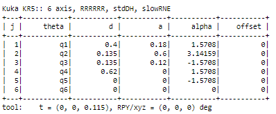
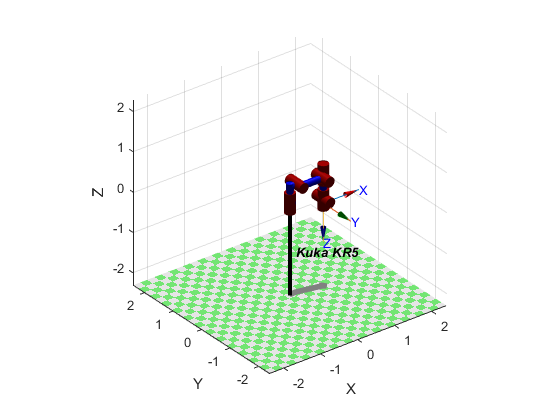
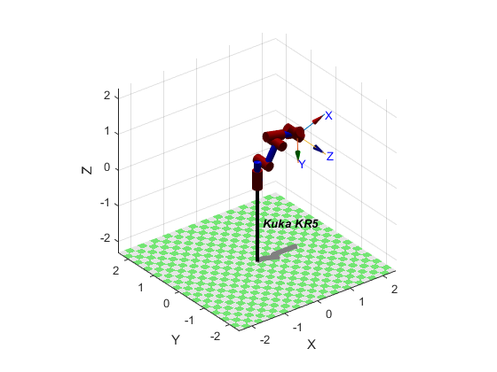
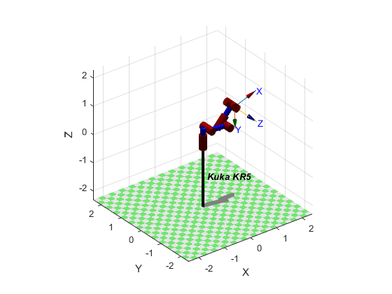

Vamos começar por criar o KUKA KR5
mdl_KR5 % Cria o Robô
KR5 % Mostra os detalhes do Robô (Parametros DH)

Ao criar o Robô, podemos ver na figura acima os paramêtros de Denavit-Hartenberg (DH). Interpretando a tabela, temos:
-
• j - É o indentificador
-
• theta (joint angle) - É o ângulo entre os eixos xj-1 e xj sobre os eixos zj-1
-
• d (link offset) - É a distância desde da origem do "frame" j-1 até ao eixo xj por todo o eixo de zj-1
-
• a (link lenght) - É a distância entre os eixos zj-1 e zj por todo o eixo de xj; e por interceptar os eixos paralelos em zj-1 x zj
-
• alpha (link twist) - O ângulo desde o eixo zj-1 até zj sobre o eixo de xj
-
• offset (joint type) - offset = R para uma junta de revolução, offset = P para uma junta prismática
Agora precisamos de criar um vetor de tempo
tempo = [0:0.1:3] % Este intervalo de tempo considera 0.08s para o movimento do robô durante a simulação
Depois de criarmos o vetor de tempo, vamos começar por definir a Cinemática Direta para o KUKA KR5.
Para calcularmos a Cinemática Direta, utilizámos o método fkine disponível na Robotics Toolbox.
A Cinemática Cireta, serve para encontrar a posição do end-effector a partir de valores dos parâmetros das juntas.
Vamos criar as coordenadas do Robô
pos_A = [0 0 0 0 0 0] % Posição Inicial do robô (em qz)
pos_B = [0 pi/3 -pi/10 -pi/6 pi/5 pi/3] %posição final do robô
O nosso objetivo é mostrar o ponto de partida do Robô, e o ponto que pretendemos que o Robô alcance.
Para o ponto de partida, temos o Robô em qz, ou seja com todos os ângulos a zero.

KUKA KR5 em
qz, ou seja, com os ângulos a zeros.
Para o ponto de chegada, queremos que o KUKA KR5 esteja com o cotovelo levantado, e com o end-effector apontado para a frente.

KUKA KR5 na posição final desejada.
Agora vamos testar os movimentos. Vamos começar por ver a trajetória do início ao fim.
O código utilizado para extrairmos este vídeo foi:
trajcd = jtraj(pos_A, pos_B, tempo) %calculo da trajetória
plot(KR5, trajcd, 'movie', 'kukaKR5atob.mp4') % plota o cálculo da trajetória, assim como guarda a mesma em video
O próximo passo, será obter a Cinemática Direta
Para tal, e como acima indicado, vamos utilizar o método
fkine disponível na Robotics Toolbox de Peter Corke.
Este método permite obter a Cinemática Direta no nosso Robô e irá apresentar a matriz homogénea correspondente à pose do end-effector.
T = KR5.fkine(trajcd) %calculo da cinemática direta
Ao efetuar o código acima no matlab, 32 matrizes serão criadas, isso quer dizer que a Cinemática Direta foi corretamente
aplicada.
Depois da Cinemática Direta, vamos para a Cinemática Inversa
A Cinemática Inversa é um processo matemático para calcular as variáveis dos paramêtros das juntas
necessárias para colocar em prática o fim da cadeia Cinemática. Desta forma iremos
conseguir obter a pose de um Robô numa determinada orientação ao início desta mesma cadeia.
cininv = KR5.ikine(T) %cálculo da cinemática inversa
Agora vamos apresentar algumas abordagens do nosso KUKA KR5 em determinadas poses
utilizando a Cinemática Inversa.
KUKA KR5 em Cinemática Inversa (simples)
plot(KR5, cininv) %KR5 em cinemática inversa
KUKA KR5 em cinemática inversa com o cotovelo para baixo

plot(KR5, cininvCotBaixo) %KR5 em cinemática inversa com o cotovelo para baixo
Agora vamos fazer alguns testes de Movimento ao KUKA KR5
Agora que já conseguimos obter as cinemáticas, vamos observar o comportamento do KUKA KR5 em determinados cenários.
Iremos criar 6 eventos com diferentes coordenadas. O objetivo é utilizar a Cinemática Inversa
para obter ângulos a partir das coordenadas X, Y e Z dos eventos criados.
Iremos utilizar um novo método, o
ikcon em vez do típico
ikine,
porque o primeiro tem uma otimização para controlar o limite das juntas.
Também é uma mais valia para o nosso cenário, uma vez que minimiza a margem de erro entre a Cinemática Direta
para soluções de ajuste do end-effector.
Mas antes de criarmos os eventos, teremos que definir uma nova métrica de tempo para
observarmos o comportamento do Robô.
% Coordenadas em X Y e Z
ponto1 = SE3(0.9, 0.2, 0.5);
ponto2 = SE3(.5,-0.5, -2);
ponto3 = SE3(1.5, 1.5, 1.5);
ponto4 = SE3(0.5, 0.04, 0.5);
ponto5 = SE3(0.9, -5, 3);
ponto6 = SE3(-15, -10, -16);
Agora que já temos os pontos definidos, vamos aplicar a Cinemática Inversa para obter os ângulos
a partir das coordenadas criadas.
q1 = KR5.ikcon(ponto1)
q2 = KR5.ikcon(ponto2)
q3 = KR5.ikcon(ponto3)
q4 = KR5.ikcon(ponto4)
q5 = KR5.ikcon(ponto5)
q6 = KR5.ikcon(ponto6)
Como nos foi ensinado nas aulas teóricas, é importante garantirmos que conhecemos todas as singularidades que o
nosso Robô pode ter.
Vamos criar matrizes Jacobianas para cada ponto para determinarmos a existência de alguma singularidade.
J1 = KR5.jacobn(q1);
det(J1)
J2 = KR5.jacobn(q2);
det(J2)
J3 = KR5.jacobn(q3);
det(J3)
J4 = KR5.jacobn(q4);
det(J4)
J5 = KR5.jacobn(q5);
det(J5)
J6 = KR5.jacobn(q6);
det(J6)
J7 = KR5.jacobn(pos_B);
det(J7)
E pronto! Agora é a parte interessante! Vamos ver o KUKA KR5 a passar pelos vários pontos
desde do início até ao fim (posição A até à posição B).
Da Posição inicial (pos_A) até ao ponto1
path=mtraj(@tpoly,pos_A,q1,tempo2);
plot(KR5,path, 'trail', {"r", 'LineWidth', 8}, 'movie', 'kukaKR5Ato1.mp4'); %Posição A até Ponto1
Do ponto1 até ao ponto2
path=mtraj(@tpoly,q1,q2,tempo2);
plot(KR5,path, 'trail', {"r", 'LineWidth', 8}, 'movie', 'kukaKR51to2.mp4'); % Posição Ponto1 até Ponto2
Do ponto2 até ao ponto3
path=mtraj(@tpoly,q2,q3,tempo2);
plot(KR5,path, 'trail', {"r", 'LineWidth', 8}, 'movie', 'kukaKR52to3.mp4');% Posição Ponto2 até Ponto3
Do ponto3 até ao ponto4
path=mtraj(@tpoly,q3,q4,tempo2);
plot(KR5,path, 'trail', {"r", 'LineWidth', 8}, 'movie', 'kukaKR53to4.mp4');% Posição Ponto3 até Ponto4
Do ponto4 até ao ponto5
path=mtraj(@tpoly,q4,q5,tempo2);
plot(KR5,path, 'trail', {"r", 'LineWidth', 8}, 'movie', 'kukaKR54to5.mp4'); % Posição Ponto4 até Ponto5
Do ponto5 até ao ponto6
path=mtraj(@tpoly,q5,q6,tempo2);
plot(KR5,path, 'trail', {"r", 'LineWidth', 8}, 'movie', 'kukaKR55to6.mp4'); % Posição Ponto5 até Ponto6
E, finalmente, do ponto6 à posição final (pos_B)
path=mtraj(@tpoly,q6,pos_B,tempo2);
plot(KR5,path, 'trail', {"r", 'LineWidth', 8}, 'movie', 'kukaKR56toB.mp4');% E finalmente. Posição Ponto6 até Posição B
Nos pedaços de código colocámos a trajetória do movimento com
trail e também colocámos a forma de extrair o filme em formato .mp4 para a drive da Matlab com o método
movie.
Outra abordagem com o KUKA KR5
Vamos apresentar uma abordagem inspirada num exemplo partilhado por Peter Corke.
Unir 4 esferas e formar um Quadrado
Desta vez iremos apenas utilizar a Cinemática Inversa.
Primeiro passo, criar o Robô
mdl_KR5 % Cria o Robô
KR5.tool = SE3(0, 0, 0.2) % Cria o comprimento da ferramenta
s = 0.2 % Desenha o tamanho do quadrado
Já temos o ambiente criado, vamos agora desenhar as coordenadas do KUKA KR5
p = [s s 0 pi/2 % inicio
-s s 0 pi/2 % lado1
-s s 0 0 % roda
-s -s 0 0 % lado2
-s -s 0 pi/2% roda
s -s 0 pi/2% lado3
s -s 0 0 % roda
s s 0 0 % lado4
]
t1 = 5 % tempo para cada lado
t2 = 1 % tempo cada rodação
Agora temos a parte em que é necessário gerar as trajetórias
% Cria a trajetória, e a matriz com cada linha considerando (x, y, z,
% theta)
pt = mstraj(p, [], [t1 t2 t1 t2 t1 t2 t1], [], 0.1, 0.4)
% Translação para cada ponto da trajetória
X = SE3([0.5 0 -s])
% Cada ponto na trajetória, faz a traslação, define o eixo do z para baixo
% e roda o "gripper" do eixo z
Tt = SE3(pt(:,1:3)) * X * SE3.Ry(pi) * SE3.Rz(pt(:,4))
Vamos aplicar a Cinemática Inversa
qt = KR5.ikine6s(Tt, 'qn') % Cinemática Inversa com o cotovelo para cima
E vamos encontrar os cantos do quadrado
ps = X * p(1:2:end,1:3)' % Posição dos cantos do quadrado, e pontos ímpares
Para unirmos os quatro pontos e desenhar o quadrado, vamos adicionar quatro esferas ao ambiente
clf
plot_sphere(ps, 0.03, 'b') % cria a esfera
E por fim... Vamos ver o KUKA KR5 a desenhar um quadrado
KR5.plot(qt, 'trail', {'y', 'LineWidth', 5}, 'nowrist', 'view', [138 8], 'movie', 'kukaKR5sphere.mp4')
Nos pedaços de código, colocámos a trajetória do movimento com
trail e também colocámos a forma de extrair o filme em formato .mp4 para a drive da Matlab com o método
movie.